Schede didattiche classe quarta primaria
2430 schede didattiche per la classe quarta primaria: comprensione del testo, ascolto e lessico, da stampare (PDF) con soluzioni.
2.430 materiali
Tema
Torio – Scheda didattica classe quarta e quinta: testo con spazi vuoti e crucipuzzle
Tolleranza – Scheda didattica classe quarta e quinta: testo con spazi vuoti e crucipuzzle
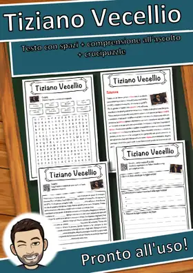
Tiziano Vecellio – Scheda didattica classe quarta e quinta: testo con spazi vuoti e crucipuzzle
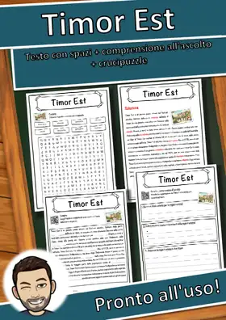
Timor Est – Scheda didattica classe quarta e quinta: testo con spazi vuoti e crucipuzzle
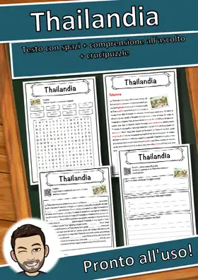
Thailandia – Scheda didattica classe quarta e quinta: testo con spazi vuoti e crucipuzzle
Tetano – Scheda didattica classe quarta e quinta: testo con spazi vuoti e crucipuzzle
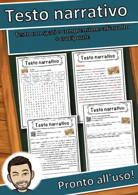
Testo narrativo – Scheda didattica classe quarta e quinta: testo con spazi vuoti e crucipuzzle
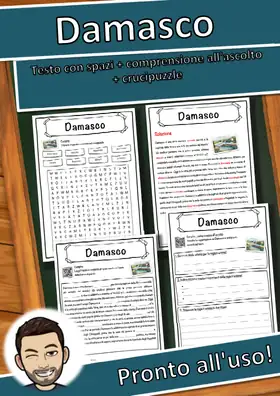
Damasco – Scheda didattica classe quarta e quinta: testo con spazi vuoti e crucipuzzle
Corporazioni delle arti e mestieri – Scheda didattica classe quarta e quinta: testo con spazi vuoti e crucipuzzle
Carota – Scheda didattica classe quarta e quinta: testo con spazi vuoti e crucipuzzle
Testo – Scheda: testo con spazi vuoti, comprensione all'ascolto e crucipuzzle
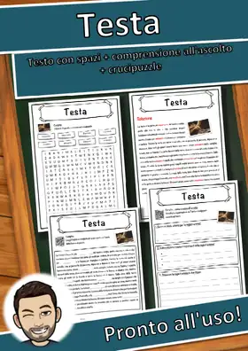
Testa – Scheda: testo con spazi vuoti, comprensione all'ascolto e crucipuzzle
Terre rare – Scheda: testo con spazi vuoti, comprensione all'ascolto e crucipuzzle
Teppismo – Scheda: testo con spazi vuoti, comprensione all'ascolto e crucipuzzle
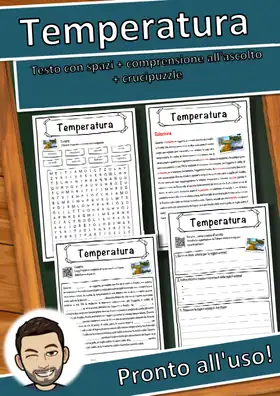
Temperatura – Scheda: testo con spazi vuoti, comprensione all'ascolto e crucipuzzle
Tecnezio – Scheda: testo con spazi vuoti, comprensione all'ascolto e crucipuzzle
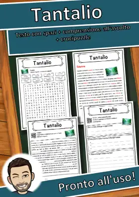
Tantalio – Scheda: testo con spazi vuoti, comprensione all'ascolto e crucipuzzle
Giubileo – Scheda: testo con spazi vuoti, comprensione all'ascolto e crucipuzzle
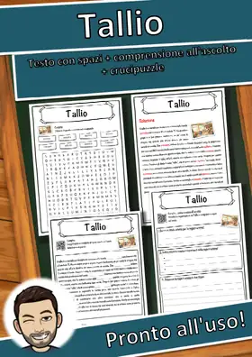
Tallio – Scheda: testo con spazi vuoti, comprensione all'ascolto e crucipuzzle
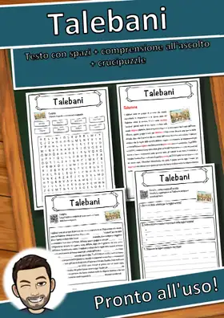
Talebani – Scheda: testo con spazi vuoti, comprensione all'ascolto e crucipuzzle
Tabacco – Scheda: testo con spazi vuoti, comprensione all'ascolto e crucipuzzle
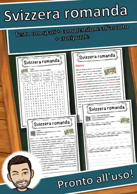
Svizzera romanda – Scheda: testo con spazi vuoti, comprensione all'ascolto e crucipuzzle
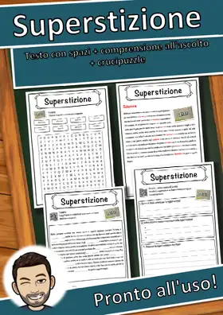
Superstizione – Scheda: testo con spazi vuoti, comprensione all'ascolto e crucipuzzle
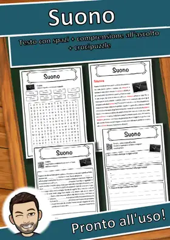
Suono – Scheda: testo con spazi vuoti, comprensione all'ascolto e crucipuzzle
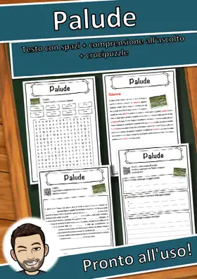
Palude – Scheda: testo con spazi vuoti, comprensione all'ascolto e crucipuzzle
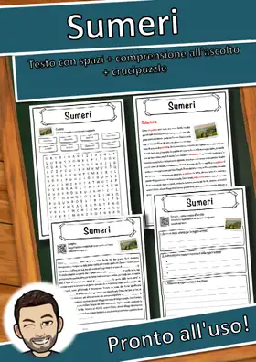
Sumeri – Scheda: testo con spazi vuoti, comprensione all'ascolto e crucipuzzle
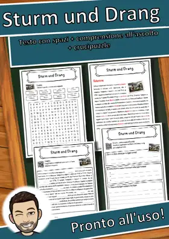
Sturm und Drang – Scheda: testo con spazi vuoti, comprensione all'ascolto e crucipuzzle
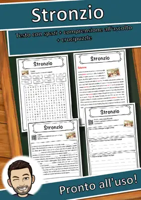
Stronzio – Scheda: testo con spazi vuoti, comprensione all'ascolto e crucipuzzle
Stile – Scheda: testo con spazi vuoti, comprensione all'ascolto e crucipuzzle
Stagione delle piogge – Scheda: testo con spazi vuoti, comprensione all'ascolto e crucipuzzle
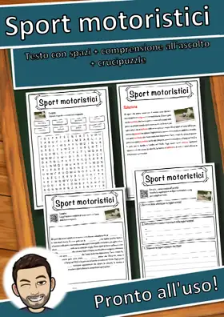
Sport motoristici – Scheda: testo con spazi vuoti, comprensione all'ascolto e crucipuzzle

Specie – Scheda: testo con spazi vuoti, comprensione all'ascolto e crucipuzzle
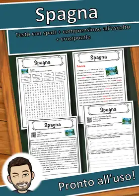
Spagna – Scheda: testo con spazi vuoti, comprensione all'ascolto e crucipuzzle
Unione Sovietica – Scheda: testo con spazi vuoti, comprensione all'ascolto e crucipuzzle
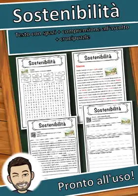
Sostenibilità – Scheda: testo con spazi vuoti, comprensione all'ascolto e crucipuzzle
Guerra del Sonderbund – Scheda: testo con spazi vuoti, comprensione all'ascolto e crucipuzzle
Socrate – Scheda: testo con spazi vuoti, comprensione all'ascolto e crucipuzzle
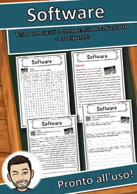
Software – Scheda: testo con spazi vuoti, comprensione all'ascolto e crucipuzzle
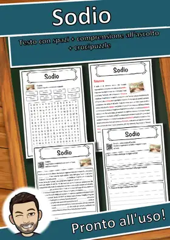
Sodio – Scheda: testo con spazi vuoti, comprensione all'ascolto e crucipuzzle
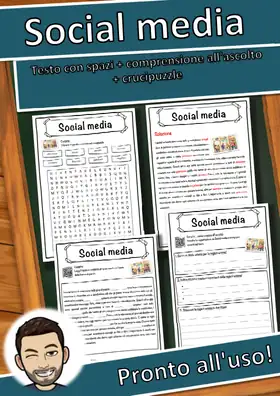
Social media – Scheda: testo con spazi vuoti, comprensione all'ascolto e crucipuzzle
Slovacchia – Scheda: testo con spazi vuoti, comprensione all'ascolto e crucipuzzle
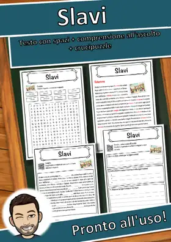
Slavi – Scheda: testo con spazi vuoti, comprensione all'ascolto e crucipuzzle
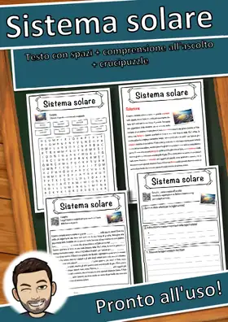
Sistema solare – Scheda: testo con spazi vuoti, comprensione all'ascolto e crucipuzzle
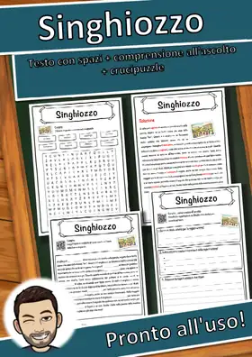
Singhiozzo – Scheda: testo con spazi vuoti, comprensione all'ascolto e crucipuzzle
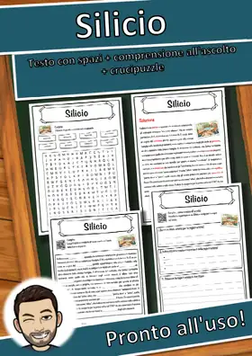
Silicio – Scheda: testo con spazi vuoti, comprensione all'ascolto e crucipuzzle
Siberia – Scheda: testo con spazi vuoti, comprensione all'ascolto e crucipuzzle
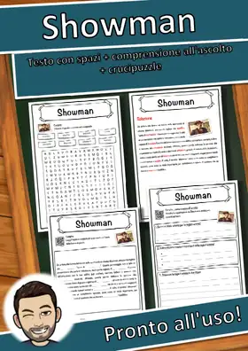
Showman – Scheda: testo con spazi vuoti, comprensione all'ascolto e crucipuzzle
Seul – Scheda: testo con spazi vuoti, comprensione all'ascolto e crucipuzzle
Nessun materiale trovato: prova con un'altra parola o un altro filtro.